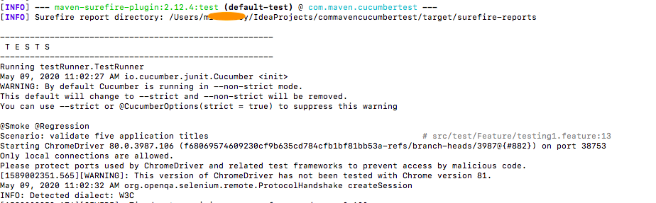

First we need to set up Maven in our system :
Windows: Download maven from Here
Unzip it, set MAVEN_HOME as 'maven unzip path/bin'. Same in windows PATH as well.
MAC:Install maven from Terminal : brew install maven
Using Terminal check maven version as below:
mvn -v
Add below code in your pom.xml
<properties> <maven.compiler.source>1.7</maven.compiler.source> <maven.compiler.target>1.7</maven.compiler.target> </properties>
My complete pom.xml now looks like below:
<?xml version="1.0" encoding="UTF-8"?> <project xmlns="http://maven.apache.org/POM/4.0.0" xmlns:xsi="http://www.w3.org/2001/XMLSchema-instance" xsi:schemaLocation="http://maven.apache.org/POM/4.0.0 http://maven.apache.org/xsd/maven-4.0.0.xsd"> <modelVersion>4.0.0</modelVersion> <groupId>com.maven.cucumbertest</groupId> <artifactId>com.maven.cucumbertest</artifactId> <version>1.0-SNAPSHOT</version> <properties> <maven.compiler.source>1.7</maven.compiler.source> <maven.compiler.target>1.7</maven.compiler.target> </properties> <dependencies> <dependency> <groupId>io.cucumber</groupId> <artifactId>cucumber-java</artifactId> <version>5.5.0</version> </dependency> <dependency> <groupId>io.cucumber</groupId> <artifactId>cucumber-junit</artifactId> <version>5.5.0</version> </dependency> <dependency> <groupId>io.cucumber</groupId> <artifactId>cucumber-core</artifactId> <version>5.5.0</version> </dependency> <dependency> <groupId>io.cucumber</groupId> <artifactId>gherkin</artifactId> <version>13.0.0</version> </dependency> <dependency> <groupId>org.seleniumhq.selenium</groupId> <artifactId>selenium-java</artifactId> <version>3.141.59</version> </dependency> </dependencies> </project>
Open Terminal or cmd --> go to your project path pom.xml file-->type 'mvn test'
This will start your execution and Terminal/cmd output will be as below:


Pass feature file as a parameter : Maven
I want to execute only feature file : stringConcat.feature
# Feature file name : stringConcat.feature Feature: Do String Concat and output it with Calculation. @addition Scenario: Pass company name and add two numbers When We pass company as "Cognizant" Then Output should be "Welcome to Cognizant" And When we pass two numbers as "5" and "5" for addition Then output should be "10" @subtraction Scenario: Pass company name and add two numbers When We pass company as "Google" Then Output should be "Welcome to Google" And When we pass two numbers as "8" and "5" for subtraction Then output should be "3"
My testRunner class features path should be generic , not any perticular feature file.
package testRunner; import io.cucumber.junit.CucumberOptions; import io.cucumber.junit.Cucumber; import org.junit.runner.RunWith; @RunWith(Cucumber.class) @CucumberOptions( features = "src/test/Feature", glue = "stepDefinition", plugin = { "pretty", "html:target/cucumber-reports" }) public class TestRunner { }
Now we have multiple feature file inside 'src/test/Feature'. We waht to execure only 'stringConcat' using mvn
Open Terminal or cmd --> go to your project path pom.xml file-->type
mvn test -Dcucumber.options=
"src/test/Feature/stringConcat.feature"
This will start your execution and Terminal/cmd output will be as below:
Code for the above output is :
package stepDefinition; import io.cucumber.java.en.When; import io.cucumber.java.en.Then; import org.openqa.selenium.WebDriver; import org.openqa.selenium.chrome.ChromeDriver; public class StepDeftest2 { String concatedvalue; int finalnumber =0; @When("We pass company as {string}") public void we_pass_company_as(String string) { concatedvalue = "Welcome to"+" "+string; } @Then("Output should be {string}") public void output_should_be(String string) { if(concatedvalue.equals(string)) { System.out.println("Output String is Pass as :"+concatedvalue); } } @Then("When we pass two numbers as {int} and {int} for addition") public void when_we_pass_two_numbers_as_and_for_addition(Integer int1, Integer int2) { finalnumber = int1+int2; } @Then("When we pass two numbers as {int} and {int} for subtraction") public void when_we_pass_two_numbers_as_and_for_subtraction(Integer int1, Integer int2) { finalnumber =int1-int2; } @Then("output should be {int}") public void output_should_be(Integer int1) { if (finalnumber==int1) { System.out.println("Final number is Pass as :"+finalnumber); } } }
Pass 'TAG' as a parameter : Maven
I want to pass only 'smoke' or 'regression' as a parameter to execute.Below command will execute all 'smoke' tagged scenarios from all the features file.
Open Terminal or cmd --> go to your project path pom.xml file-->type mvn test -Dcucumber.options="--tags @smoke"
To run scenarios with @smoke and @regression: mvn test -Dcucumber.options="--tags @smoke --tags @regression"
To run scenarios with @smoke OR @regression: mvn test -Dcucumber.options="--tags @smoke,@regression"